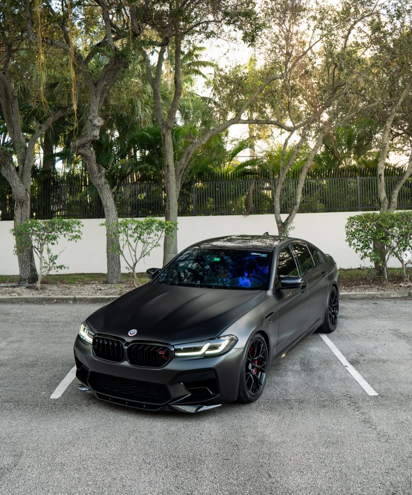

Article 4: Voiture BMW M5 F90
La BMW M5 F90, produite de 2017 à 2023, représente la sixième génération de la célèbre berline ultra-sportive du constructeur bavarois. Elle est particulièrement célèbre pour être le dernier modèle de M5 doté d'une motorisation 100 % thermique, avant le passage de sa remplaçante (la G90) à l'hybride rechargeable.
| Nom | Prix | Image |
| BMW M5 F90 | 150 000€ | 
|